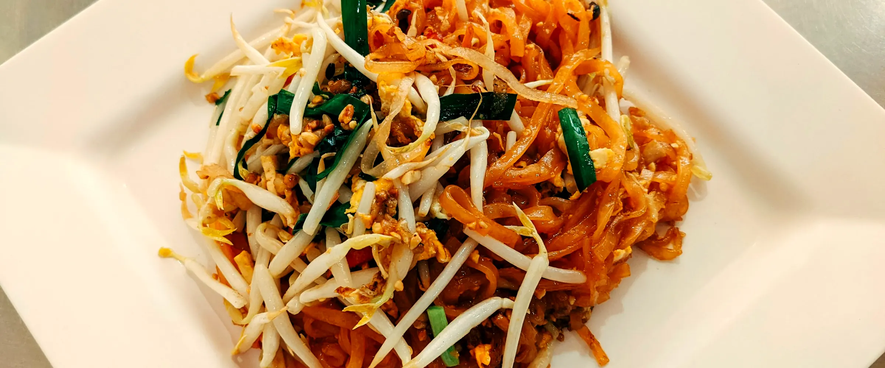

12 recipes
Asian Cuisine
Saffron, smoke and street stalls

 Amritsari CholeIndia · 50 min · Medium
Amritsari CholeIndia · 50 min · Medium Paneer Butter MasalaIndia · 35 min · Medium
Paneer Butter MasalaIndia · 35 min · Medium Masala DosaIndia · 40 min · Hard
Masala DosaIndia · 40 min · Hard Dal TadkaIndia · 30 min · Easy
Dal TadkaIndia · 30 min · Easy Mumbai Pav BhajiIndia · 40 min · Easy
Mumbai Pav BhajiIndia · 40 min · Easy Gulab JamunIndia · 45 min · Hard
Gulab JamunIndia · 45 min · Hard Vegetable Pad ThaiThailand · 25 min · Medium · Vegetarian version
Vegetable Pad ThaiThailand · 25 min · Medium · Vegetarian version JapchaeSouth Korea · 30 min · Medium · Vegetarian version
JapchaeSouth Korea · 30 min · Medium · Vegetarian version FalafelLebanon · 30 min · Medium
FalafelLebanon · 30 min · Medium Veg MomosNepal · 50 min · Hard · Vegetarian version
Veg MomosNepal · 50 min · Hard · Vegetarian version Avocado Cucumber MakiJapan · 45 min · Hard
Avocado Cucumber MakiJapan · 45 min · Hard Vegetable Spring RollsChina · 45 min · Medium
Vegetable Spring RollsChina · 45 min · Medium